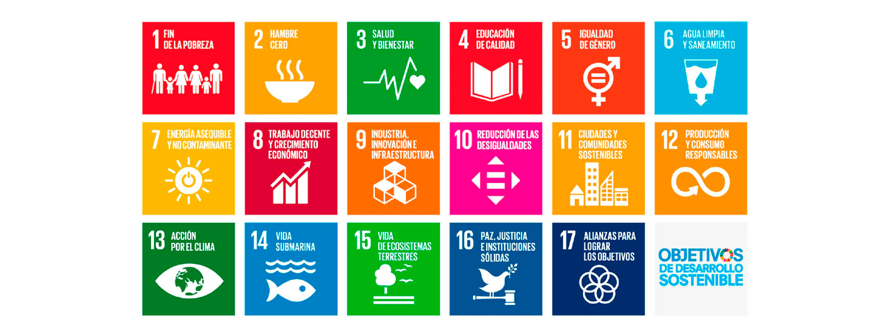
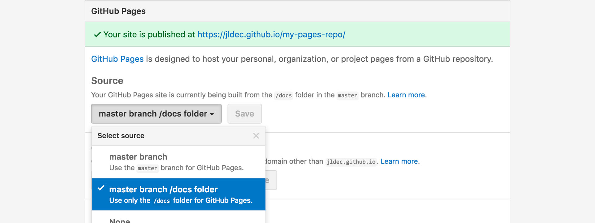
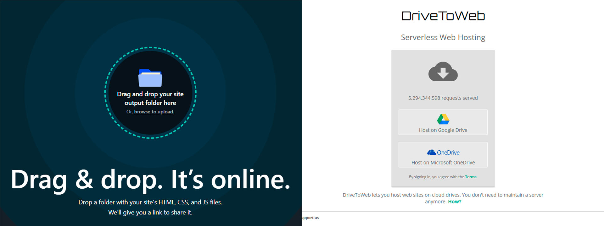

Semana 2
Laboratorio de innovación 2
Jueves 7 de Septiembre
Vimos que los Objetivos de Desarrollo Sostenible son importantes para construir un mejor futuro en la sociedad, que abarca tanto temas sociales, económicos y ambientales, conectando con el triple balance. Además es importante que empresas y emprendimientos los adopten ya que actualmente es una tendencia estar alineados con los ODS para tener una buena reputación, oportunidades de innovación, nuevas ideas de negocio y no quedarse estancados entre la competencia.
También vimos ejemplos de algunas startups enfocadas en resolver las ODS. Luego, hicimos un mindstorming en grupo para sacar ideas de cómo resolver problemas abarcando las ODS y a través de las ideas de los compañeros pudimos sacar más ideas. Y al final de la clase formamos grupos de trabajo para el resto del ciclo.
Sábado 9 de Septiembre
Vimos como Index.html es la página principal de una web que es fundamental para que pueda funcionar, en este caso el landing page y también Gh-pages y Master, donde Master es la rama principal del repositorio de Github y Gh-pages son las ramas en las que se dividirá el contenido de nuestra web.
Terminamos de definir los grupos. Vinculé mi cuenta de Github con Visual Studio Code y elegimos una plantilla web para la bitácora. También vimos alternativas para subir nuestras bitácora. La primera sería a través de Netlify donde subimos nuestra carpeta de HTML y se crea nuestra web, y la segunda sería creando una carpeta en drive con todos nuestros archivos y poniéndola la ponemos en la página DriveToWeb
